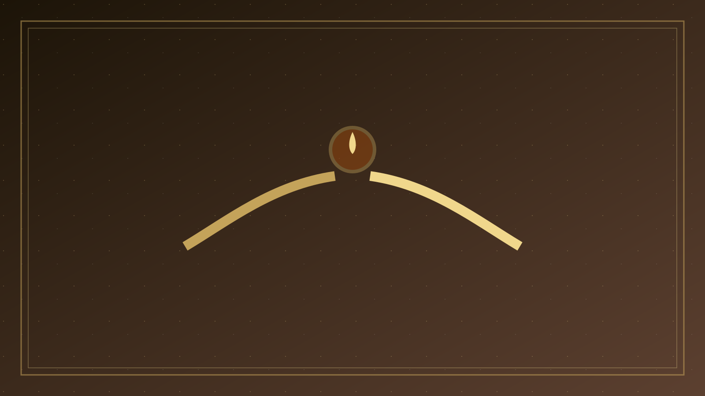
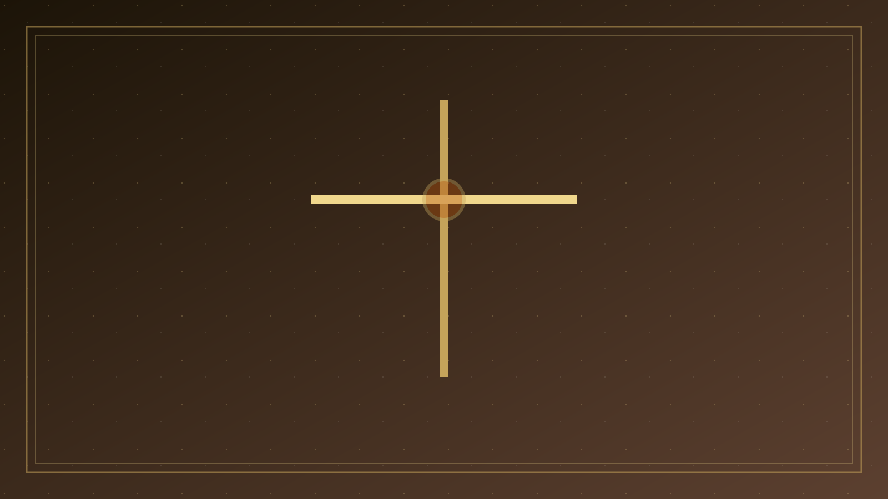
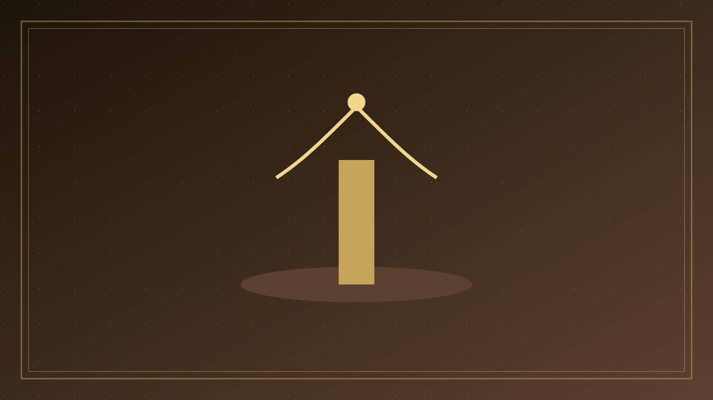

專論總覽
盟約中的呼求：按救贖歷史讀聖經裡的祈禱與禱告
本篇已按原有標題拆成可獨立閱讀的分題。請選一題進入；正文未經改寫，只把長頁分開。

01
問題意識
一、問題意識：祈禱不是技巧 粵語常說「祈禱」；和合本正文則多用「禱告」，間亦用「祈禱」「祈求」。

02
呼求與摔跤
二、創造與呼求 人被造，不是為了自成一世界，而是為了在神面前活著。
- 創造與呼求
- 族長與出埃及

03
詩篇：祈禱的學校
四、詩篇：祈禱的學校 若聖經有一所祈禱學校，那就是詩篇。

04
聖殿與被擄
五、聖殿、祭與代求 所羅門獻殿禱文（王上 8）是舊約最長的公共祈禱之一。
- 聖殿、祭與代求
- 先知與被擄

05
耶穌的祈禱
七、耶穌的祈禱：子對父的順服 對觀福音，尤其路加，把耶穌的祈禱寫進關鍵轉折：受洗時「正在禱告，天就開了」（路 3:21）；「耶穌卻退到曠野去禱告」（路 5:16）；選十二使徒前…

06
教會與保羅
八、教會的祈禱：宣教與逼迫 使徒行傳把初期教會寫成一群禱告的群體，而不是一群先有策略、再偶爾祈禱的群體。
- 教會的祈禱
- 兒子的呼叫
07
張力與牧養
十、張力：祈求、未蒙應允，與「奉我的名」 耶穌說：「你們祈求，就給你們；尋找，就尋見；叩門，就給你們開門。
- 未蒙應允
- 牧養結論